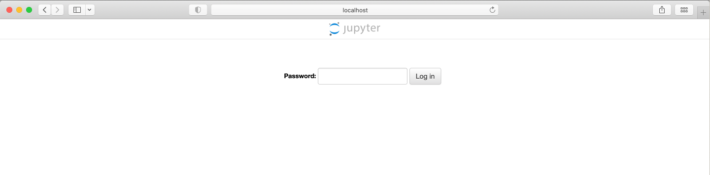
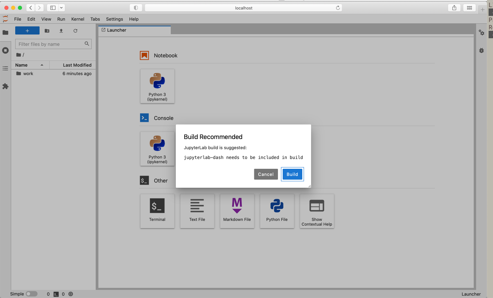
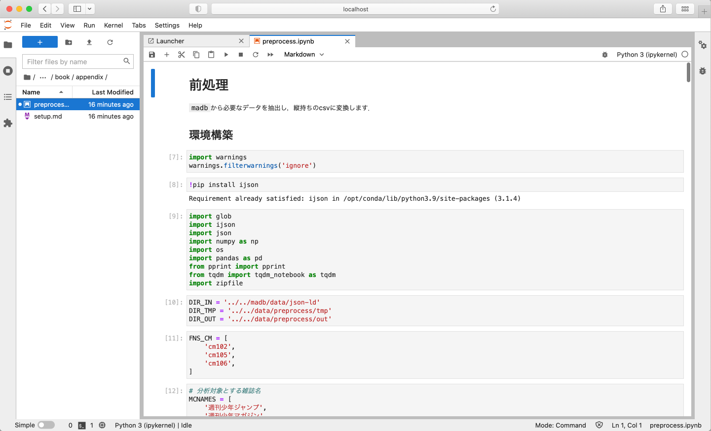
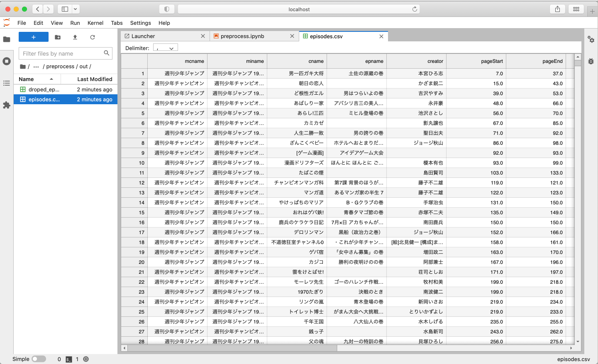

環境構築#
前提#
事前に下記がインストールされていることが前提です．
ちなみに私の環境は：
macOS Catalina Version 10.15.7
Docker version 20.10.7, build f0df350
docker-compose version 1.29.2, build 5becea4c
git version 2.29.2
です．
手順#
GitHubからソースコードのクローン#
本書のGitHubリポジトリからソースコード及びMADBのデータをダウンロードしてください． 例えば，
git clone --recursive https://github.com/kakeami/viz-madb.git
とシェルでコマンドを打てば，viz-madbディレクトリが作成され，必要なデータが全てダウンロードされます．
--recursiveオプションを付けることで，MADB Labのデータを格納するmadbディレクトリも含めてクローンしています．
今後の分析ではmadbディレクトリがあることが前提となりますので，必ず--recursiveオプションをつけるようご注意ください．
データサイズが大きいため，しばらく時間がかかります．
Jupyter Labの起動#
viz-madbディレクトリに移動し，下記のコマンドでコンテナを立ち上げてください．
sudo docker-compose up -d
ブラウザからlocalhost:9998にアクセスすると，下図のようにパスワード入力画面が表示されます．
madbを入力してログインしましょう．

下図のようにビルドを求められる場合は，Buildをクリックしてください．

左のエクスプローラーから，work > bookの順に選択し，解析用ディレクトリに移動してください．
ノートブック（*.ipynb）と本書の対応関係をいかに示します．
.
├── appendix
│ ├── preprocess.ipynb # 前処理用
│ └── setup.md
├── charts4amounts
│ ├── bars.ipynb # 棒グラフ
│ └── heatmap.ipynb # ヒートマップ
├── charts4assocs
│ ├── 2d.ipynb # 二次元ヒストグラム
│ ├── connected.ipynb # 折れ線グラフ（二変数）
│ ├── contours.ipynb # 等高線プロット
│ ├── correlo.ipynb # コレログラム
│ ├── line.ipynb # 折れ線グラフ
│ ├── scatter.ipynb # 散布図・バブルチャート
│ └── slope.ipynb # 並行座標プロット
├── charts4dists
│ ├── box.ipynb # 箱ひげ図
│ ├── density.ipynb # 密度プロット
│ ├── hist.ipynb # ヒストグラム
│ ├── ridgeline.ipynb # リッジラインプロット
│ ├── strip.ipynb # ストリップチャート
│ └── violin.ipynb # バイオリンプロット
├── charts4props
│ ├── bars.ipynb # 棒グラフ
│ ├── mosaic.ipynb # モザイクプロット
│ ├── parallel.ipynb # パラレルセットグラフ
│ ├── pie.ipynb # 円グラフ
│ ├── stacked_den.ipynb # 積上げ密度プロット
│ └── tree.ipynb # ツリーマップ
├── eda
│ └── eda.ipynb # そもそもどんなデータを扱うの？
Note
なお，本ページはsetup.mdと対応しています．
前処理の実行#
appendix > preprocess.ipynbに移動し，前処理を実行しましょう．

上から順番にShift+Enterを押していけば問題なく実行できるはずです．
最終的にviz-madb/data/preprocess/outに下記の二つの.csvファイルが出力されていたら成功です．
viz-madb/data/preprocess/out
├── droped_episodes.csv
└── episodes.csv

Jupyter Labのパスワードの変更#
周知のパスワードを使い回すのは危険なので，必ず変更しましょう．
viz-madbディレクトリ直下にあるdocker-compose.ymlの最終行がパスワードに対応します．
version: "3"
services:
jupyterlab:
build:
context: .
volumes:
- "./:/home/jovyan/work"
user: root
ports:
- "9998:8888"
environment:
NB_UID: 1000
NB_GID: 1000
GRANT_SUDO: "yes"
command: start.sh jupyter lab --NotebookApp.password="sha1:82d29c037295:4e7d81a84b2750b65c72483df428016aa6984b5d"
最後の"sha1:82d..."を適宜変更しましょう．
例えばYOUR_PASSとしたい場合は，pythonで
>>> from notebook.auth import passwd
>>> passwd('YOUR_PASS', 'sha1')
'sha1:f0a65743e8bb:bf98a478a320c4fd1d8431679921f51a79a29850'
とすればトークンを生成できます（このままコピペしないでください！）